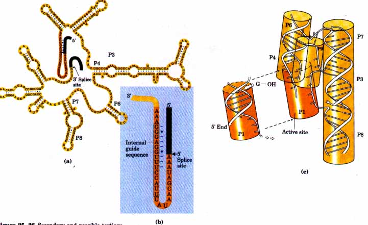
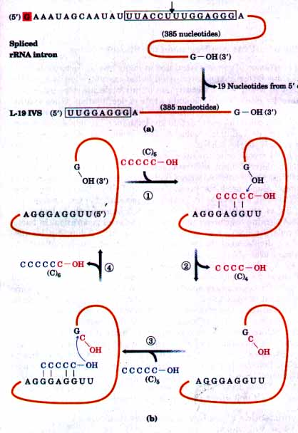
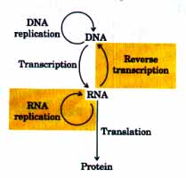
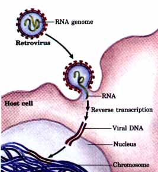
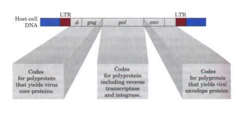
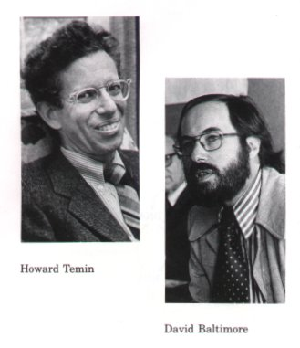
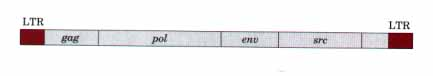
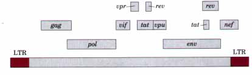

| (NMP)n + NDP |
(NMP)n+1 | + Pi |
| Lengthened polynucleotide |
The study of posttranscriptional processing of RNA molecules has led to one of the most exciting discoveries in modern biochemistry-the existence of RNA enzymes or ribozymes. The best characterized ribozymes are the self splicing group I introns and RNase P. Most of the activities of these ribozymes are based on two fundamental reactions: transesterification (see Fig. 25-12) and phosphodiester bond hydrolysis (cleavage). Where bonds are cleaved by either of these ribozymes, the products have 3'-hydroxyl and 5'-phosphate termini, in contrast to the 5'-hydroxyl and 2'- or 3'-phosphate products formed by random alkaline hydrolysis of RNA. The substrate for ribozymes is often an RNA molecule; sometimes the substrate is itself part of the ribozyme. With an RNA substrate, an RNA catalyst can make use of base-pairing interactions to align the substrate for reaction.
Ribozymes tend to be large. Although the three-dimensional structure of these catalytic RNAs is not known, it is clearly important for function. Activity is lost if the RNA is heated beyond its melting temperature, if denaturing agents are added, or if complementary oligonucleotides are added that can disrupt normal base-pairing patterns. They can also be inactivated if some essential nucleotides are changed. The secondary structure and possible tertiary structure of a self splicing intron from the 26S rRNA precursor of Tetrahymena are shown in Figure 25-26.

Figure 25-26 Secondary and possible tertiary structure of the self-splicing rRNA intron from Tetrahymena. Intron and exon sequences are shaded yellow and green, respectively. (a) Some basepaired regions are labeled (Pl, P3, etc.) according to an established convention for this RNA molecule. The Pl region, which contains the internal guide sequence, is the location of the 5' splice site. (b) An enlargement of the internal guide sequence of group I introns. This sequence can base-pair with the 5' splice site to bring about its proper alignment for reaction. The remainder of the intron forms a three-dimensional structure that catalyzes the splicing reaction (see Fig. 25-24b). (c) In a proposed tertiary structure, the P3, P4, P6, P7, and P8 regions fold up to form an active site into which Pl can fit.
The self splicing group I introns have several properties of enzymes other than greatly accelerating the reaction rate. The binding of the guanosine cofactor to the Tetrahymena group I rRNA intron (p. 868) is saturable (Km ≈ 30 μM) and can be competitively inhibited by 3'-deoxyguanosine. The intron is also very precise in its excision reaction, largely due to an internal guide sequence that can base-pair with exon sequences near the 5' splice site (Fig. 25-26b). This helps provide the proper alignment of bonds to be cleaved and rejoined.
Because the intron itself is used up (excised) during the splicing reaction, it may appear that it lacks one key enzymatic property: the ability to catalyze multiple reactions. Closer inspection has shown that after excision, the 414 nucleotide intron from Tetrahymena rRNA does in fact act as a true enzyme. A series of intramolecular cyclizationl cleavage reactions in the excised intron leads to the loss of 19 nucleotides from its 5' end. The remaining 395 nucleotide linear RNA, called the L-19 IVS (for intervening sequence lacking 19 nucleotides), promotes nucleotidyl transfer reactions in which some oligonucleotides are lengthened at the expense of others (Fig. 25-27). The best substrates are oligonucleotides, for example a synthetic (C)5 oligomer, which can base-pair with a specific guanylate-rich sequence in L-19 IVS. Enzymatic activity results from a cycle of transesterification reactions mechanistically similar to self splicing. L-19 IVS, however, is not used up, and each ribozyme processes about 100 substrate molecules per hour. Thus L-19 IVS is a catalyst. It follows Michaelis-Menten kinetics, is specific for RNA oligonucleotides, and is competitively inhibited by (dC)5. The kcat /Km is 103 M-1 s-l, low compared to many enzymes, but the hydrolysis of (C)5 by this ribozyme is accelerated by a factor of 1010 relative to the uncatalyzed reaction. This RNA molecule can clearly be quite effective as an enzyme.
 |
Figure 25-27 In vitro catalytic activity of L-19 IVS of Tetrahymena. (a) L-19 IVS is generated by the autocatalytic removal of 19 nucleotides from the 5' end of the spliced intron. The G residue (shaded in red) added in the first step of the splicing reaction (see Fig. 25-13) is part of the removed sequence. A portion of the internal guide sequence (boxed) remains at the 5' end of L-19 IVS. (b) Lengthening of RNA oligonucleotides catalyzed by L-19 IVS. Some oligonucleotides are lengthened at the expense of others in a cycle of transesterification reactions (steps (1) through (4). The 3' OH of the G residue at the 3' end of L-19 IVS plays a key role in this cycle of reactions (note that this is not the G residue that was added in the splicing reaction). (C)5 is one of the better substrates because it can base-pair with the guide sequence remaining in the intron. Although this activity is probably irrelevant to the cell, it has important implications for current hypotheses on evolution. This catalytic activity was elucidated by Thomas Cech and coworkers. |
The second well-characterized ribozyme is derived from RNase P. The E. coli RNase P has an RNA component called the Ml RNA (377 nucleotides) and a protein component (Mr 17,500). In 1983, Sidney Altman, Norman Pace, and coworkers discovered that under some conditions the Ml RNA alone is sufiicient for catalysis, cleaving tRNA precursors at the correct position. The protein apparently is needed only to stabilize the RNA or facilitate its function under the particular conditions present in the cell. In spite of some sequence differences, RNase P derived from such diverse organisms as bacteria and humans accurately processes the tRNA precursors from other species.
Other catalytic RNAs are known. Some small RNAs of plant RNA viruses form a structure that promotes a self cleavage reaction. In one case the specific cleavage activity has been localized to a 19 nucleotide fragment, making it the smallest ribozyme known. The signiiicance of RNA catalysis has been enhanced further by another discovery-that the synthesis of peptide bonds in proteins is catalyzed largely by an RNA component of ribosomes (Chapter 26). The discovery of catalytic RNAs has provided new insights into catalytic function in general and has important implications for the origin of life on this planet, a topic we will discuss at the end of this chapter.
The expression of genes is regulated at many levels. Perhaps the most important factor in gene expression is the concentration of a specific mRNA in a cell. The concentration of any molecule depends on two factors: its rate of synthesis and its rate of degradation. When synthesis and degradation of an mRNA are balanced, its concentration remains at a constant, steady-state level. An increase in the rate of synthesis or degradation leads to net accumulation or depletion, respectively, of the mRNA.
In eukaryotic cells, the rates of mRNA degradation vary greatly for mRNAs derived from different genes. Gene products needed only briefly may have mRNAs with a half life measured in minutes or even seconds. Gene products needed constantly by the cell may have mRNAs that are stable for many cell generations. On average, the half life of an mRNA in a vertebrate cell is about three hours, the mRNA turning over about ten times in each cell generation. In bacterial cells the half life of mRNAs is only about 1.5 min, but because bacteria divide much faster than eukaryotic cells, bacterial mRNAs also turn over about ten times in each cell cycle.
RNA is degraded by ribonucleases present in all cells. A prominent enzyme in most cells is a 3'→5' exoribonuclease; this may represent the primary degradative activity. Stable mRNAs generally have some sequence at or near the 3' end that inhibits this enzyme. In bacteria, the hairpin structure present in mRNAs with a ρ-independent terminator (see Fig. 25-8) confers stability. Similar hairpin structures can confer stability on selected regions of a primary transcript, leading to nonuniform degradation of some polycistronic transcripts. In eukaryotic cells, the 3' poly(A) tail may be important to the stability of many mRNAs. Removal of this tail (and possibly some proteins that are normally bound to it) leads to rapid degradation of some normally stable mRNAs. These degradative processes ensure that RNAs do not build up in the cell and direct the synthesis of unnecessary proteins.
In 1955 Marianne Grunberg-Manago and Severo Ochoa discovered the bacterial enzyme polynucleotide phosphorylase, which in vitro catalyzes the reaction
| (NMP)n + NDP |
(NMP)n+1 | + Pi |
| Lengthened polynucleotide |
Polynucleotide phosphorylase was the first nucleic acid-synthesizing enzyme found (Arthur Kornberg's discovery of DNA polymerase followed soon thereafter). The reaction catalyzed by polynucleotide phosphorylase differs fundamentally from the other polymerizing activities discussed so far in that it is not template-directed. The enzyme requires the 5'-diphosphates of ribonucleosides and cannot act on the homologous 5'-triphosphates or on deoxyribonucleoside 5'-diphosphates. The RNA polymer formed by polynucleotide phosphorylase contains normal 3',5'-phosphodiester linkages, which can be hydrolyzed by ribonuclease. The reaction is readily reversible and can be pushed in the direction of breakdown of the polyribonucleotide by increasing the phosphate concentration. The probable function of this enzyme in the cell is the degradation of mRNAs to form nucleoside diphosphates.
Because the polynucleotide phosphorylase reaction does not use a template, it does not form a polymer having a specific base sequence. The reaction proceeds as well with only one of the nucleoside diphosphates as with all four. The base composition of the polymer formed by the enzyme reflects the relative concentrations of the 5'-diphosphate substrates in the medium.
Polynucleotide phosphorylase can be used for the laboratory preparation of many different kinds of RNA polymers with different sequences and frequencies of bases. Such synthetic RNA polymers made it possible to deduce the genetic code for the amino acids (Chapter 26).
| In our discussion of DNA and RNA
synthesis up to this point, the role of template strand
has been reserved for DNA. However, enzymes that use an
RNA template in nucleic acid synthesis are surprisingly
widely distributed. With a very important exception,
these enzymes play only a modest role in information
pathways. The exception is viruses having an RNA genome.
These viruses are the source of most RNA-dependent
polymerases characterized so far. The existence of RNA replication requires an elaboration of the infarmation pathways described in the introduction to Part IV of this book (p. 790) (Fig. 25-28). The additional pathways are important, not simply because the enzymes involved are extremely useful in recombinant DNA technology (Chapter 28), but because they have profound implications for any discussion of the nature of self replicating molecules that may have existed in prebiotic times. |
 Figure 25-28 Extension of the central dogma to include RNA-dependent synthesis of RNA and DNA. |
| Certain RNA viruses of animal tissues
contain within the viral particle a unique RNA-directed
DNA polymerase called reverse transcriptase.
On infection, the single-stranded RNA viral genome
(~10,000 nucleotides in length) and the enzyme enter the
host cell, and the reverse transcriptase catalyzes the
synthesis of a DNA strand complementary to the viral RNA
(Fig. 25-29). The same enzyme degrades the RNA strand in
the resulting RNA-DNA hybrid and replaces it with DNA.
The duplex DNA so formed often becomes incorporated into
the genome of the eukaryotic host cell. Under some
conditions such integrated (and dormant) viral genes
become activated and transcribed to generate new viruses. The existence of reverse transcriptases in RNA viruses was predicted by Howard Temin in 1962, and the enzymes were ultimately demonstrated to occur in such viruses by Temin and independently by David Baltimore in 1970. Their discovery aroused much attention, particularly because it constituted molecular proof that genetic information can sometimes flow "backward" from RNA to DNA. The RNA viruses containing reverse transcriptases are also known as retroviruses (retro is the Latin word for "backward"). |
 Figure 25-29 Retroviral infection of a mammalian cell and integration of the retrovirus into the host chromosome. The integration has many characteristics of the insertion of transposons in bacteria (Fig. 24-40). For example, a few base pairs of host DNA are duplicated at the site of integration, forming short (4 to 6 base pair) repeats at each end (not shown). Note that on infection of the host cell, also entering from the viral particle are reverse transcriptase and a tRNA base-paired to the viral RNA. The function of this tRNA is described later in the text. |
Retroviruses typically have three genes: gag (derived from the historical designation: group associated antigen), pol, and enU (Fig. 2530). The gag gene encodes a "polyprotein" that is cleaved into three or four proteins that make up the interior core of the virus particle structure. The protease catalyzing this cleavage is itself part of the polyprotein in many retroviruses. The pol gene codes for reverse transcriptase. Reverse transcriptase often has two subunits, α and β; the pol gene encodes the β subunit (Mr 90,000), and theα subunit (Mr 65,000) is simply a proteolytic fragment of the β subunit. The pol gene product is also a polyprotein that includes the reverse transcriptase and a separate integrase needed for inserting the viral DNA into the host genome. The integrase is separated from the reverse transcriptase by the protease described above. The enu gene specifies another polyprotein from which the proteins of the viral envelope are derived. At each end of the linear RNAs are long terminal repeat (LTR) sequences a few hundred nucleotides long. These contain sequences required for integration into the host DNA and the regulation of viral gene expression.

Figure 25-30 General structure of an integrated retrovirus genome. The long terminal repeats (LTRs) have sequences needed for the regulation and initiation of transcription. The sequence denoted ψ is required for packaging retroviral RNAs into mature virus particles.

Retroviruses have played an important role in recent advances in the molecular understanding of cancer. Most retroviruses do not kill their host cells. They remain integrated in the cellular DNA and are replicated along with it. Some retroviruses, however, have an additional gene that can cause the cell to become cancerous (i.e., to grow abnormally), and these viruses are classified as RNA tumor viruses. The first retrovirus of this type to be studied was the Rous sarcoma virus (also called avian sarcoma virus; Fig. 25-31), named for Peyton Rous who studied chicken tumors now known to be caused by this virus. The cancer-causing gene in this and other tumor viruses is called an oncogene. Since the initial discovery of oncogenes by Harold Varmus and Michael Bishop, more than 40 different such genes have been found in retroviruses.

Figure 25-31 The Rous sarcoma virus genome. The src gene encodes a tyrosine-specific protein kinase, one of a class of enzymes known to function in systems that affect cell division, cell-cell interactions, and intercellular communication. The same gene is found in the DNA of normal chickens and in the genomes of many other eukaryotes including humans. When associated with the virus, this oncogene is expressed at abnormally high levels, contributing to unregulated cell division and cancer.
Cancer results from a malfunction in the normal cellular mechanisms that regulate cell division. A cancerous tumor is made up of cells that are growing out of control because of these malfunctions (see Fig. 6-lg). The oncogenes in retroviruses are derived from normal cellular genes called proto-oncogenes, incorporated into the viral genome by rare recombination events. Proto-oncogenes generally encode proteins involved in normal cell division, growth, and development. However, the oncogenes tend to differ slightly in sequence from the proto-oncogenes, and hence the activity of their protein products may differ from that of their cellular analogs. Known oncogenes include genes for tyrosine kinases, growth factors, receptors for growth factors, and G proteins, all of which are known to participate in normal growth-control signals (Chapter 22). Some oncogenes encode nuclear proteins that are involved in gene regulation. Overexpression of oncogene-encoded proteins by the integrated retrovirus contributes to an imbalance that causes the cells to grow out of control. Cancer can be induced without the participation of a virus, by mutations in the cellular proto-oncogenes from which oncogenes are derived. Study of these genes is providing insight into mechanisms controlling normal growth and development, as well as the perturbations in these mechanisms that can lead to cancer.
The human immunodeficiency virus (HIV), the causative agent of acquired immune deficiency syndrome (AIDS), is also a retrovirus. Identified in 1983, HIV has an RNA genome with standard retroviral genes along with several other unusual genes (Fig. 25-32). The env gene in this virus (along with the rest of the genome) undergoes mutation at a very rapid rate, complicating the development of an effective vaccine. The reverse transcriptase of HIV is about tenfold less accurate in replication than other known reverse transcriptases, and this fact is largely responsible for the increased mutation rates in this virus. There are generally one or more errors made every time the viral genome is replicated, so that any two viral RNA molecules are almost never identical. Reverse transcriptase is the target of the drugs most widely used to treat HIV-infected individuals (Box 25-2).
| Figure 25-32 The genome of HIV, the virus that causes AIDS. In addition to the typical retroviral genes, there are several small genes with a variety of functions. Some of these genes overlap (see Chapter 26). Alternative splicing mechanisms lead to the production of many different proteins from this small (9.7 × 106 bases) genome. |  |